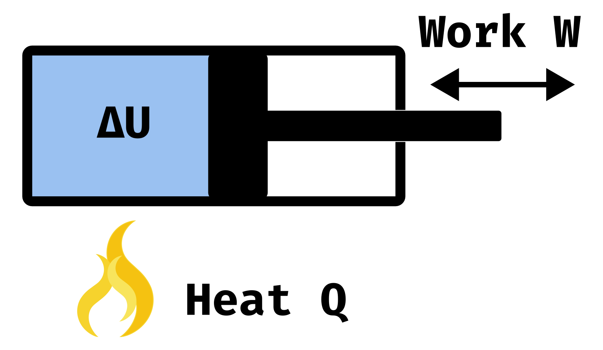
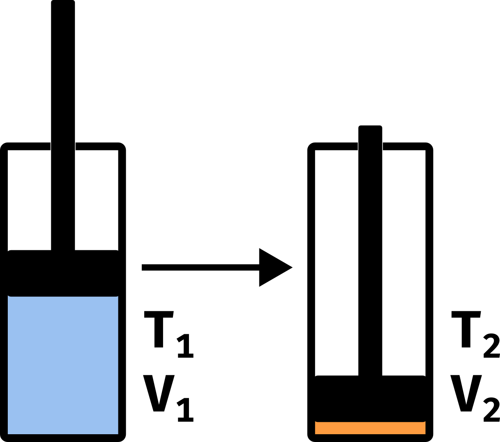

Adiabatic Compression
Introduction
Let’s say we have some gas trapped inside a cylinder with a piston preventing it from leaking. Now if we want to change the inner energy of the gas we can - according to the first law of Thermodynamics - either add/remove heat from the system or do work on the gas or let the gas do work on the environment.

In a formula you can write the first law of Thermodynamics like this
where is the change of the inner energy of the gas, is the amount of exchanged heat and is the amount of work being done on the gas/ on the environment.
Adiabatic process
During an adiabatic process there is by definition no heat exchanged with the environment. This can e.g. be approximately true for a very fast change in volume where there is almost no time to allow heat flow during this process. For us this is very convenient as we can now write the first law like this
The inner energy for an ideal gas is defined by
where is the degree of freedom for the gas, the number of gas particles, the Boltzmann constant and the temperature of the gas. As is the only variable that might change during the adiabatic process we can write the change of inner energy as
The work done on the gas/ on the environment is given by
where is the pressure and the change of volume during the process.
Combining those to the first equation we get
Now let’s introduce probably the most essential identity of Thermodynamics
where is the pressure, the volume, the number of gas particles, the Boltzmann constant and the temperature of the gas.
We can now apply the differential operator to get and insert this into our equation
where one defines as the adiabatic index.
Let’s integrate this equation on both sides
Using and we get
where is the pressure, the volume and the adiabatic index of the gas.
Now by inserting we get
where is the temperature, the volume and the adiabatic index of the gas.
Example

As you may know, the Diesel Engine does not rely on spark ignition - the fuel can ignite without a spark needed. The fuel-air vapor is instead compressed so quickly that the temperature increases significantly - enough to start the power stroke.
E.g. The 2019 Ford Super Duty has a compression ratio of . We derived that and so
where is the temperature before the compression and the temperature after the compression (same for volume). Let’s assume that the incoming air is about and that we deal only with a diatomic gas with and therefore .
The final temperature can then be calculated with
Plugging in our values we get
Sources
- Inkscape Tutorial: Vector Flame Icon
- 2019 Ford Super Duty Specifications